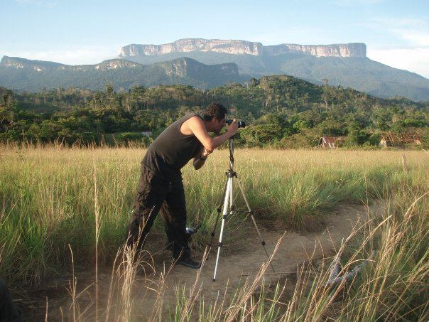
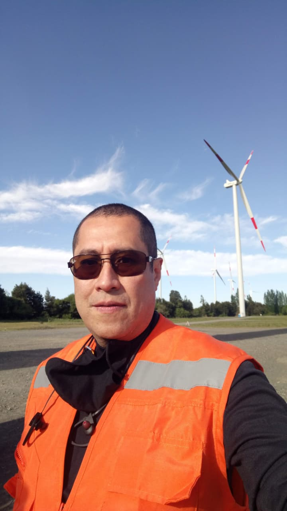
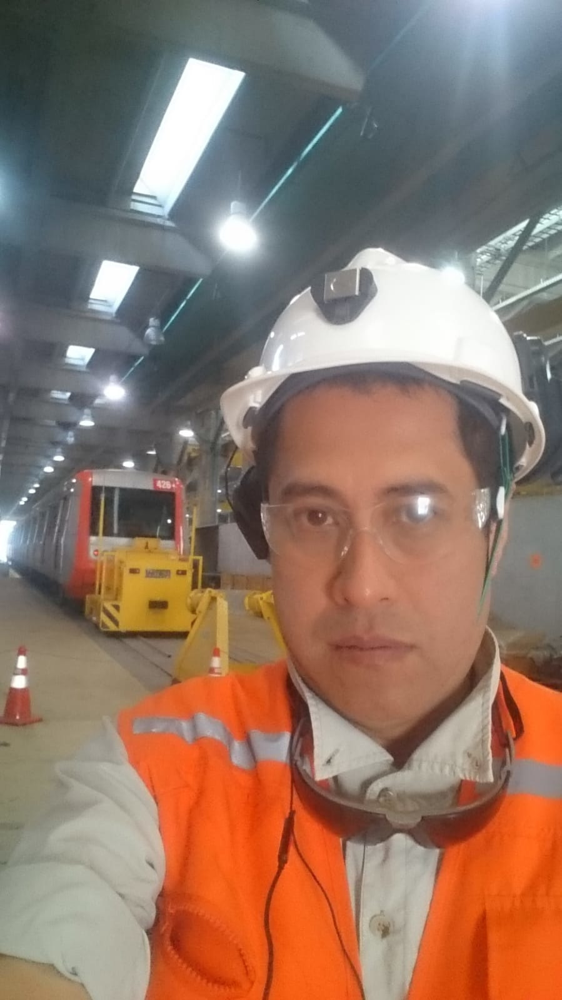
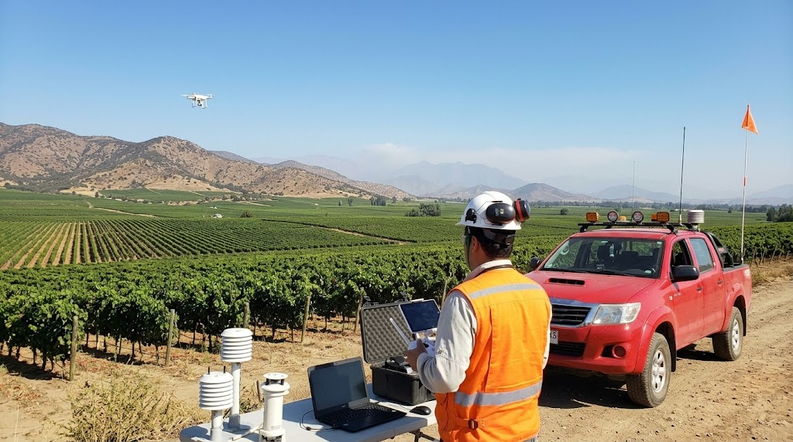
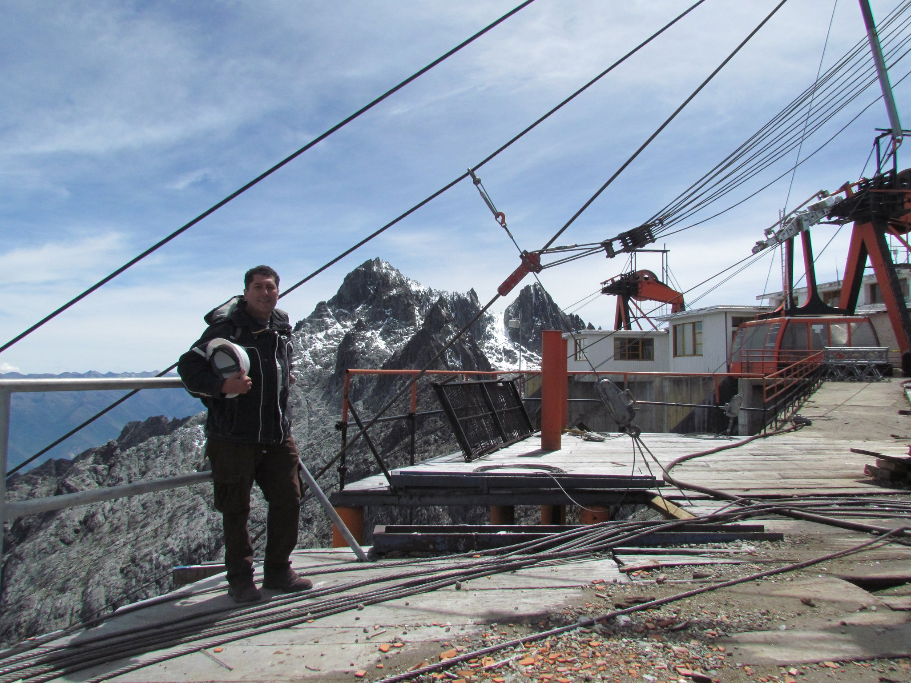
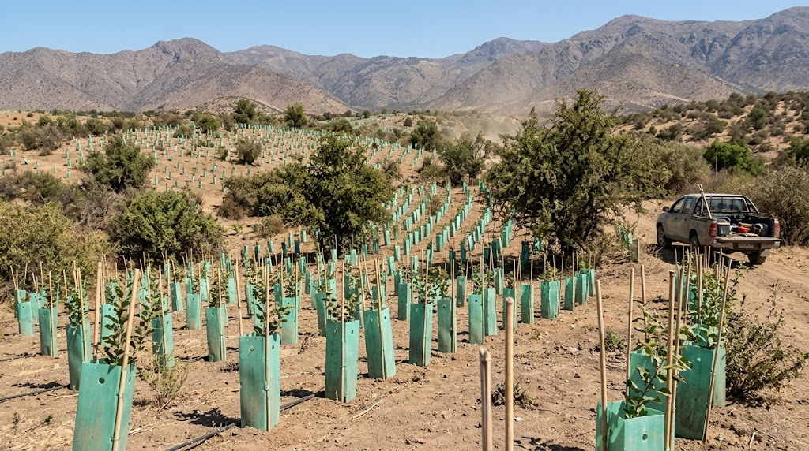
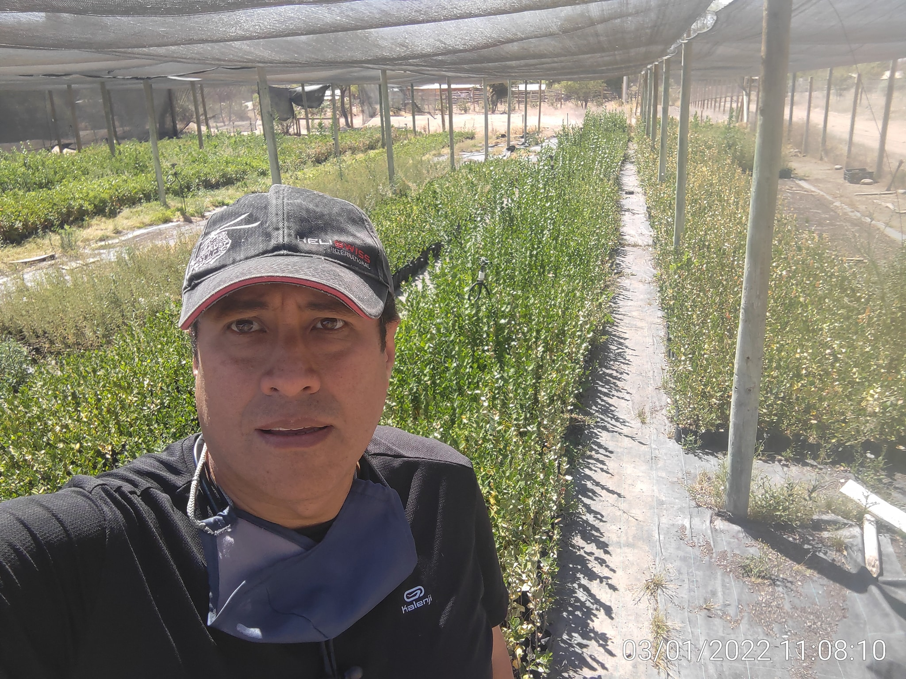
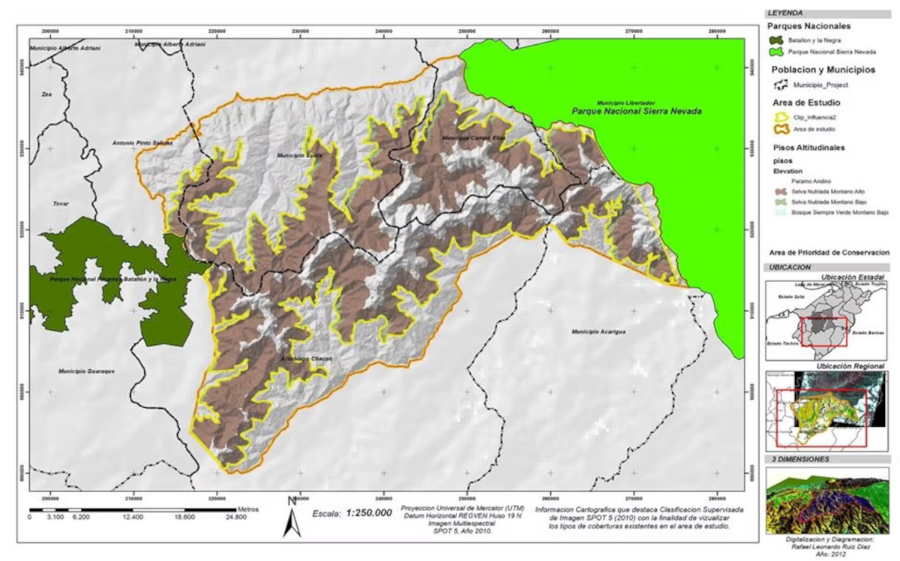
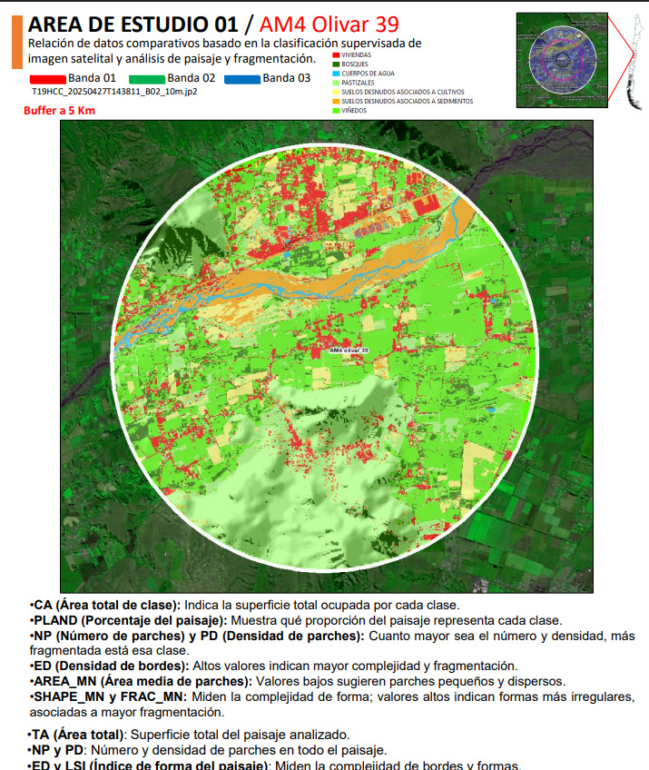
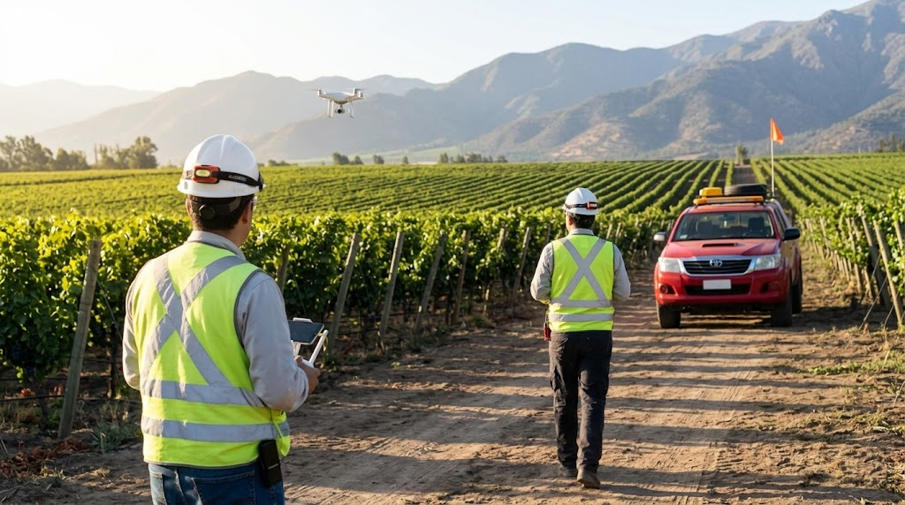

Experto en gestión ambiental, GIS, programación e inteligencia artificial con 20+ años de experiencia en minería, construcción, conservación y evaluación de impacto ambiental. Especialista en análisis espacial avanzado, drones y desarrollo de soluciones tecnológicas para la sostenibilidad ambiental.

Años de experiencia
Proyectos gestionados
Murciélagos reubicados
Certificaciones ISO
Auditorías de compromisos ambientales, monitoreo de RCAs y reportabilidad para gran minería.
Análisis espacial avanzado con drones, imágenes satelitales y cartografía temática.
Desarrollo de soluciones con inteligencia artificial, Python, GIS automation y análisis de datos espaciales.
Investigación en ecología tropical, restauración de ecosistemas y planes de manejo de fauna.
Reconocido por la Gerencia PT&E y Medio Ambiente de BHP Escondida (2024) por excelencia en la gestión de compromisos ambientales.
Monitoreo de cumplimiento de compromisos de múltiples Resoluciones de Calificación Ambiental (RCA) para gerencias de Cátodos y Proyectos, con auditorías de compromisos normativos, sectoriales y estándares globales.

Investigador Especialista Externo de Bioecos. Elaboración de líneas base de factores bióticos para parques eólicos, incluyendo caracterización de flora, fauna y ecosistemas.

Desarrollo de metodologías seguras para evacuar colonia de 3,000 murciélagos en talleres de Línea 4.

Análisis de fragmentación del paisaje en sistemas vitivinícolas de Chile Central y su implicancia en la funcionalidad ecológica.

Gerencia ambiental durante 4 años, implementando 20 Planes de Manejo Ambiental con CERO accidentes.

Jefe de proyectos para medida de compensación ambiental del parque solar en Til Til.

Restauración de bosque nativo y extracción de Pino insigne en Región del Maule.
Mapa interactivo de ciencia ciudadana para el monitoreo y conservación de quirópteros en Chile.
Análisis espacial avanzado, cartografía temática, modelamiento con IA y monitoreo con drones para proyectos ambientales.



Gestiona Consultores | BHP Minera Escondida
Biocys | Bosque CONAF-FAO, Santiago Solar
Bioecos | Metro de Santiago, Reserva Chinchillas
Doppelmayr | Teleférico de Mérida
IVIC | Atlas de Biodiversidad Indígena Amazónica
Disponible para proyectos de consultoría ambiental, GIS, IA y gestión de recursos naturales